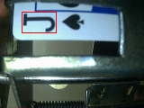
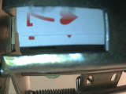

扑克牌识别
该工程的目的是识别复杂环境下的扑克牌，由于环境、光照的变化，定位扑克牌上的数字所在的位置成为了该项目的难点。我们针对图像的特点进行了认真的分析并进行算法开发，最终我们的算法检测成功率达到了99%以上。
简介
本工程是一个大项目的子项目，要求是要正确识别扑克牌的数字。为降低图像处理算法的难度，我们对扑克牌的位置做了限定。扑克牌以横着的方式通过机械设备进入摄像头拍摄的范围。同时，尽量控制环境中灯光的均匀度。经过这些预先的步骤，我们得到了一系列的图像，以下是具有代表性的一些：


从图上可以看出，扑克牌在图像中的位置相对固定；最大的不确定条件是光照：即使努力调整光源，整幅图像曝光仍然不均匀，几乎每幅图像都出现了过曝的情况，这对算法的鲁棒性有一定的挑战。
算法说明
要识别扑克牌，重点是定位牌面上数字的位置，如果能准确圈定数字，就可以使用分类或者模板匹配来进行识别。根据这一思路，我们开发出了一个数字定位算法，其主要步骤是：
- 对图像进行阈值分割，得到一个二值图像。由于环境光照的不稳定，所使用的阈值要根据图像的曝光程度进行自适应。
- 求二值图像的连通域，保留合适大小的连通域。此时获得的连通域包括很多非数字的连通域，其中，花色获得连通域无论是在面积还是形状都跟数字的类似，是最大的干扰因素。
- 通过大量的统计，获得牌面上数字区域的特征，利用这些特征找到最合适的连通域，此连通域就是我们要找的数字所在的区域。
- 若通过以上步骤没有得到合适的结果，调整二值化的阈值，回到第(1)步循环求解，直到达到最大循环次数或者找到数字为止。
结果
经过以上算法的处理，我们定位出来的数字区域是这样的：

说明：牌面中的“王”跟数字的特征有比较明显的区别，因此在这一步中我们已经能够将王正确地识别出来。在结果图中，王由绿色框标记。当牌面的数字所在的位置被准确的定位后，识别就变得很简单了，提取定位的区域进行模板匹配就能正确识别数字。通过实际测试，算法准确率能达到99%以上，导致失败的情况主要是扑克牌上的数字出现粘连，或者数字图像模糊了，比如下面这两种：

实验结果表明该项目超过预设的95%的目标。同时，该算法复杂度很低，成功应用在嵌入式系统上。
Last update: 2013-09-20